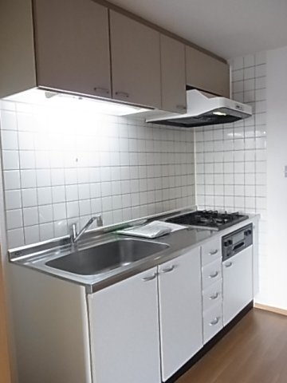
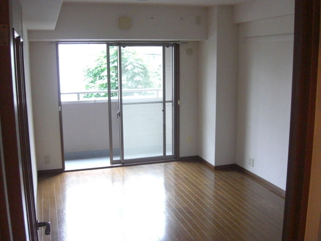
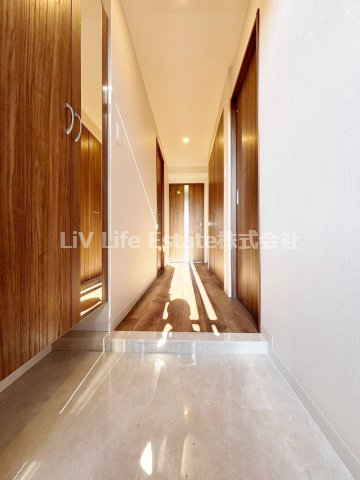
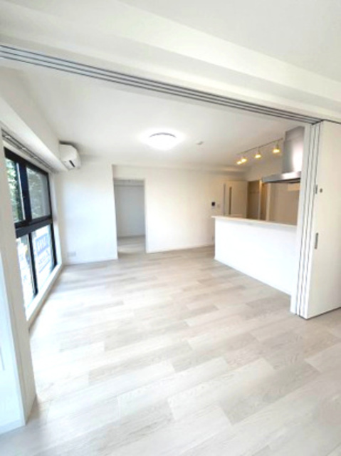
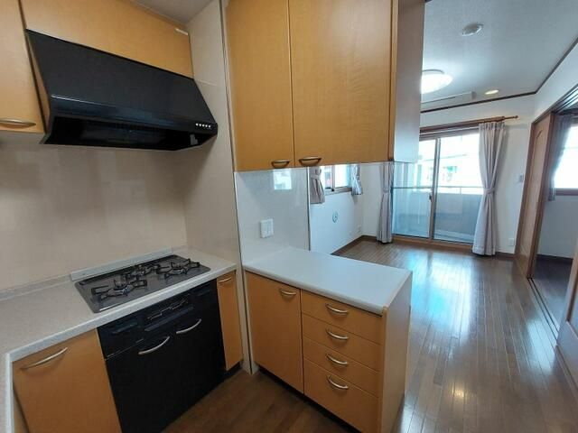

 ◎ 台地で安全🐾 ペットOK3LDK 16.3万いちばん広い 74㎡ 練馬区 東大泉西武池袋線「大泉学園」駅 徒歩10分 ウインドヒルズ189 3LDK74.3㎡今の家の2倍超 武蔵野台地◎／74㎡の3LDKで16.3万は破格。ファミリーでも余裕の広さ。 SUUMOで見る ハザードマップ
 ◎ 台地で安全🐾 ペットOK11階建 20.3万大泉学園で一番高い建物 練馬区 東大泉西武池袋線「大泉学園」駅 徒歩5分 グランフォンテ 2LDK58.1㎡11階建で眺望◎ 武蔵野台地◎／大泉学園でいちばん背の高い11階建。駅5分で眺めも出ます。 SUUMOで見る ハザードマップ
 ◎ 台地で安全🐾 ペットOK駅3分 18.5万駅3分・きれい 練馬区 東大泉西武池袋線「大泉学園」駅 徒歩3分 GRAN COTANS（グランコタンズ） 2LDK54.1㎡7階建・駅チカ 武蔵野台地◎／駅3分の好立地。デザインもきれいな7階建マンション。 SUUMOで見る ハザードマップ
 ◎ 台地で安全🐾 ペットOK築2年 19.2万築2年・広い 練馬区 東大泉西武池袋線「大泉学園」駅 徒歩7分 グリーンスクエアみその 2LDK61.9㎡築2年でピカピカ 武蔵野台地◎／築2年の新しめ。62㎡の広い2LDKで20万切り。 SUUMOで見る ハザードマップ
 ◎ 台地で安全🐾 ペットOK駅2分 17.0万駅2分・最安クラス 練馬区 東大泉西武池袋線「大泉学園」駅 徒歩2分 原田屋ビル 2LDK50.0㎡とにかく駅近 武蔵野台地◎／駅2分の抜群アクセス。2LDK 50㎡で17万は使いやすい。 SUUMOで見る ハザードマップ